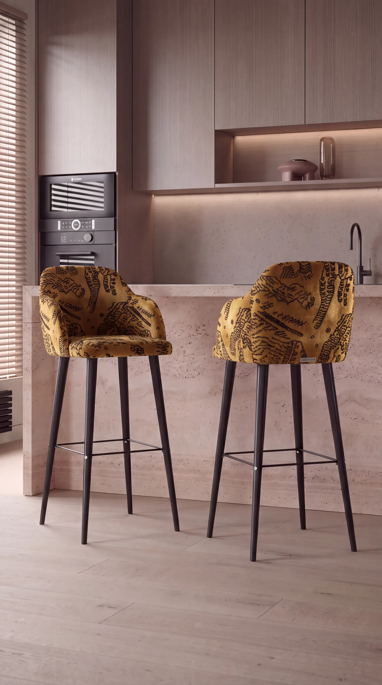

All projects
Kitchen interior for bar stools
A bar stool presented in a kitchen I designed for it: travertine island, timber fronts and hidden linear light. The same shot carries five upholstery options.
- My part
- Kitchen interior concept and modeling, materials, lighting, rendering, cinematic camera motion. The stool model was supplied.
- Year
- 2026

Five upholstery options
One camera and one light setup, five materials. This is how a catalog shows a product range.
- Style
- Warm minimalism: calm surfaces and soft tones that keep the product in focus.
- Materials
- Travertine island, wood-veneer fronts, concrete-look backsplash, oak floor, black metal legs. Upholstery: velvet, bouclé, faux fur, jacquard.
- Lighting
- Side daylight through blinds and a warm LED line under the wall cabinets.
- Software
- 3ds Max: kitchen modeling and scene. Corona Renderer: materials, light, render. Photoshop: post-production. Cinematic camera motion from the stills.
Upholstery options
The same shot in five materials.
Gold jacquard
A patterned upholstery shown from three angles.
Camera animation
Short cinematic camera moves built from the still renders.
Clay and final
Each clay render next to its final shot in gold jacquard.